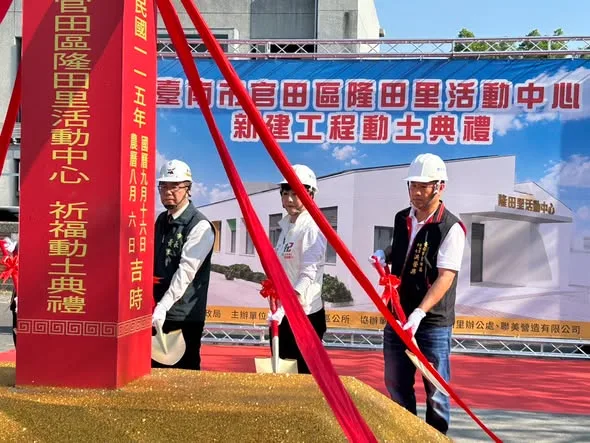
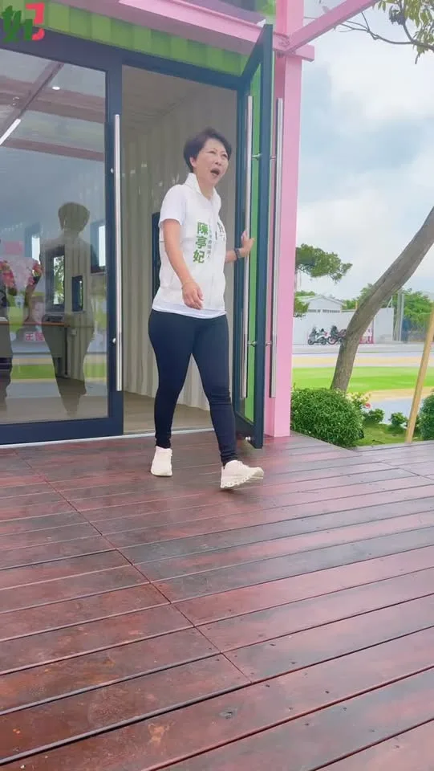
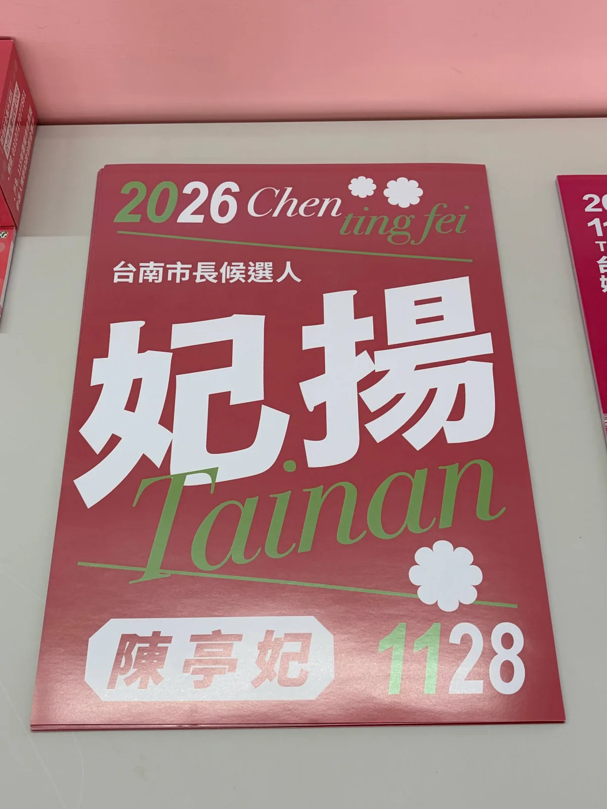
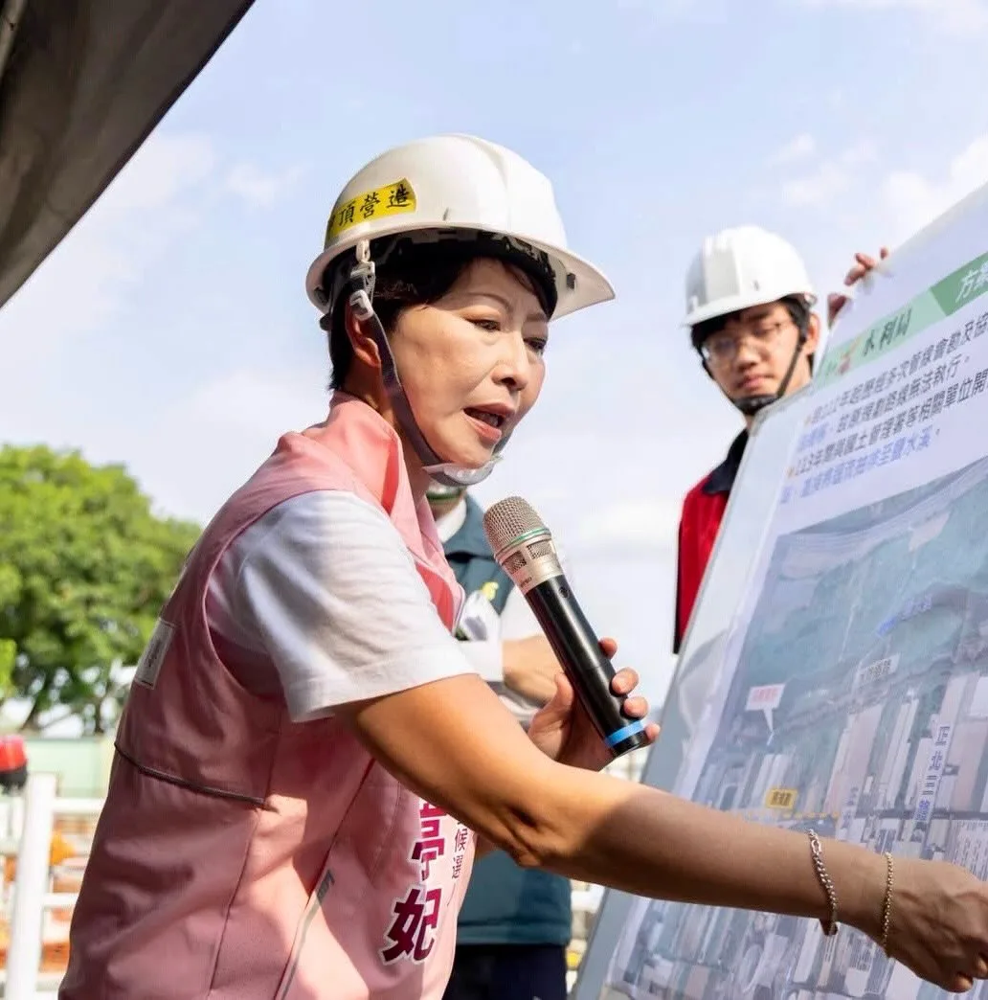
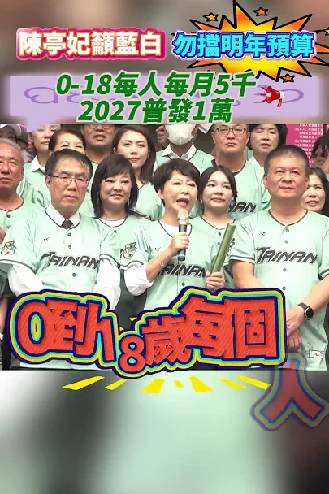
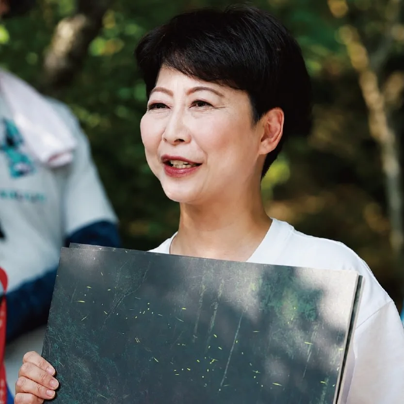
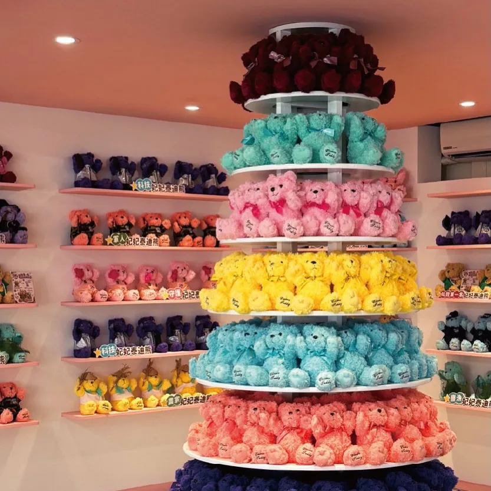
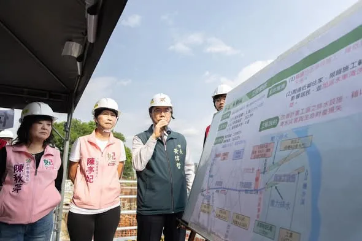
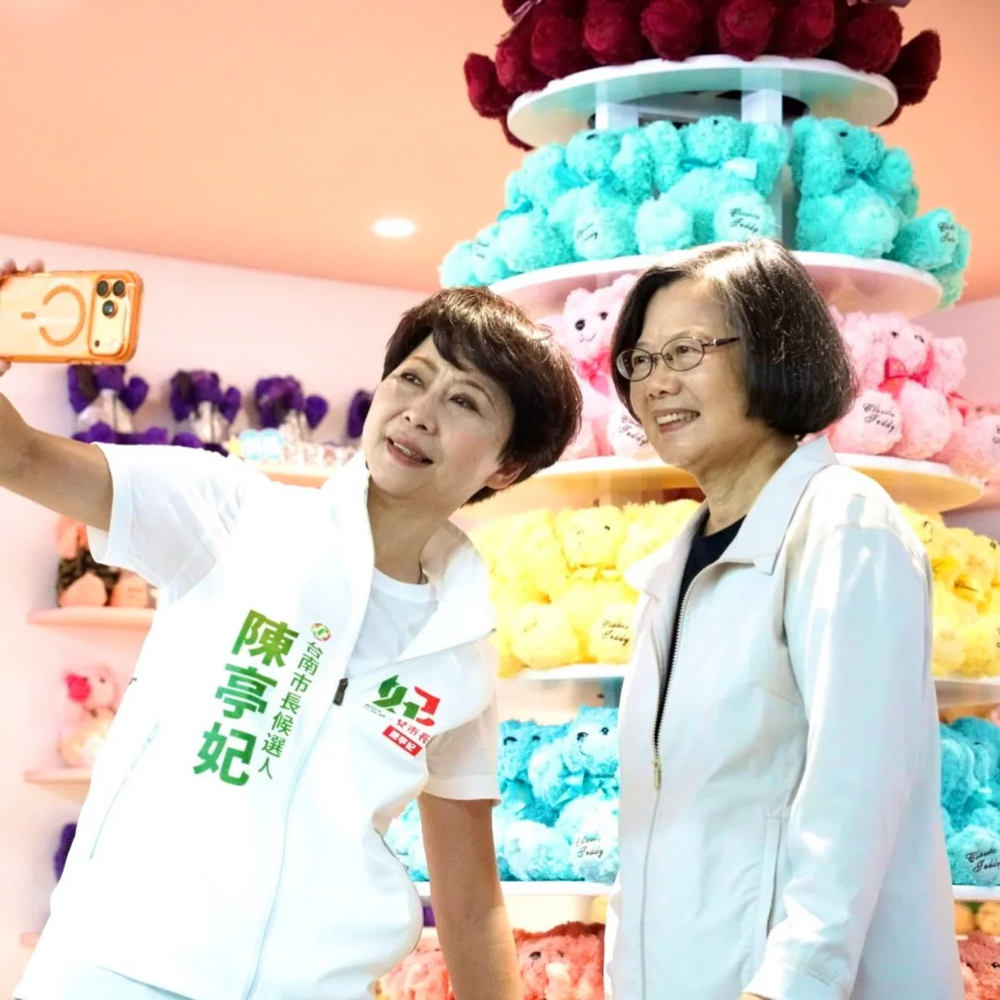

妃常女力‧陳亭妃UCWlv4Ixpdv0QjkdCL3yfGZw
小英總統開箱妃熊幸福競選總部！台灣第一女總統力挺台南第一女市長陳亭妃！
Accounts
| 平台 | 帳號 | 已收錄貼文 | 最後更新 |
|---|---|---|---|
| https://www.facebook.com/fififans/ | 100 | 2026-09-17 21:44 | |
| https://www.instagram.com/chen_tingfei/ | 75 | 2026-09-17 16:48 | |
| Threads | https://www.threads.com/@chen_tingfei | 55 | 2026-09-17 18:04 |
| YouTube | https://www.youtube.com/channel/UCWlv4Ixpdv0QjkdCL3yfGZw | 31 | 2026-09-18 08:59 |
| LINE 官方帳號 | https://page.line.me/nhu2565u | 0 | — |
Timeline
顯示 275 / 275 則
小英總統開箱妃熊幸福競選總部！台灣第一女總統力挺台南第一女市長陳亭妃！


亭妃來到官田，見證隆田里活動中心新建工程動土！ 一磚一瓦，都是鄉親對未來生活的期待。未來完工後，將提供更完善的活動與交流空間，讓社區更有活力、居民生活更便利。 #陳亭妃 #台南400第一女市長 #官田 #隆田里活動中心 #一棒接一棒

✨小英總統 蔡英文 來開箱「亭妃競總」影片先睹為快！ 從打卡區、AI動畫政見，到「妃熊幸福」親子氣墊區，小英總統一路驚喜連連，還大讚：「我全台跑透透，從沒看過這麼有美感、設計感的競選總部！」 到底有多驚艷？ 開箱影片先睹為快！ 📍陳亭妃競選總部｜永康區水漾路520號 🎉競選總部成立大會 10/11（日）下午3點 賴清德總統將親自出席、授戰旗！ 歡迎大家一起來走一趟「台南妃熊幸福奇幻旅程」！ #陳亭妃 #台南市長候選人 #蔡英文 #小英總統 #妃熊幸福 美學台南 政治也可以很生活

@chen_tingfei:謝謝兩位有創意又用心的網友 @zzzao0114、@photochicken_72 幫我設計海報❤️ 當時看到就覺得一定要印出來讓大家來拿，現在「妃揚 」跟「妃起來」海報都可以直接來競總領取囉 台南妃揚！妃起來！✈️ 除此之外，來競總不只有海報可以拿👀 扇子、米果、礦泉水，還有一些妃妃小物，都歡迎市民朋友們來索取🫶 歡迎大家一起來競總走走看看！ 📍台南市長候選人陳亭妃競選總部 台南市永康區永漾路520號
✨小英總統來「亭妃競總」開箱！驚艷從來沒見過這麼有美感及設計感的競選總部！ 蔡英文 Tsai Ing-wen總統今天來到陳亭妃競選總部，從打卡區到親自體驗AI動畫政見、當走進「妃熊幸福」專區，還大讚：「我全台跑透透，從沒看過這麼有美感、設計感的競選總部！」讓小英總統覺得最不可思議的就是「妃熊幸福」親子氣墊區 從台南400年的文化底蘊，到AI科技、農漁、觀光、福利與交通，再到可愛的妃妃泰迪熊，這裡不只是競選總部，更是陳亭妃心中「美學台南」的實踐。 歡迎大家來永康區水漾路520號，走一趟「台南妃熊幸福奇幻旅程」！ 開箱影片我們拭目以待👀 #蔡英文 #小英總統 #陳亭妃 #台南市長候選人 #美學台南 #妃熊幸福 #姐姐市長 #咱作伙寫歷史

讓地方不淹水、排水更順，守護永康家園 今天亭妃和偉哲市長一起來到永康，視察正北一路FE幹線新建工程，現場了解箱涵工程。 治水不能等，箱涵建設更要一步一步做好。 把看不見的地下排水工程做好，才能讓每一次大雨來時，市民更安心。

拚全民福利！0-18歲月領5千、AI紅利1萬元 陳亭妃喊話藍白：別擋明年預算！ #shorts

@chen_tingfei:今天我與團隊夥伴們正式進駐競選總部！ 這裡不只是作為選舉基地，空間設計上也有很多巧思，我們結合自然、親子、生活等概念，成為「美學台南」的選戰空間，讓政治也能充滿溫度！ 今天謝土儀式圓滿完成，也代表開始進入下一階段。我有信心，和台南隊的夥伴們一起，一步一步把我們對台南的想像變成行動，也把大家對這座城市的期待接起來。 10月11日下午3點，競選總部成立大會，邀請大家一起來競總走走！ 台南市長候選人陳亭妃競選總部 📍台南市永康區水漾路520號

在芒果節或是農產展， 我聽過很多果農的心聲。 我把它們歸成3件事 1. 產季時的「集運降溫」機制 芒果最怕熱，從樹上採下來到消費者手裡，中間如果沒有降溫，品質會掉一半。 政府應該補助社區型冷藏站，讓小果農也能保鮮出貨。 2. 外銷認證的「一站式服務」 台南芒果外銷，常常卡在，每一個國家的檢驗標準不同，文件複雜、時間長。 小果農根本沒能力處理。 農糧署跟外貿協會，應該設立「一站式服務窗口」，幫小農把外銷阻礙拉低。 3. 天災時的「快速救助」 亭妃一直爭取的方向就縮短地方中央的審核程序，讓救助金能「救急」，而不是事後補償。 這3件事，不是選舉政策， 是我這幾年聽到的農民建議。

大家敲碗的「台南隊」球衣，正式上線！ 從台南400年，到科技新城、農漁大城，台南一路走來，始終團結、堅持、向前。 這一次，把對台南的認同穿在身上。一起穿上DPP台灣狼《台南》聯名款城市球衣，為台南隊加油，也為台灣一起拚！
城市交流，讓經驗彼此加乘 今天 劉建國 委員來到台南做市政交流，亭妃與黃偉哲市長一起出席，從小黃公車、國產豆奶、親子悠遊館等議題交換意見，藉著分享黃偉哲市長台南的實務經驗，也聽聽雲林未來劉縣長的想法與做法。 城市進步沒有標準答案，透過交流彼此學習，把好的經驗帶回地方，讓台南、雲林一起更好！ #陳亭妃 #市政交流 #經驗分享 #台南雲林一起努力

很多人不知道，楠西，是全台最漂亮的螢火蟲棲地之一。 每年4-5月，夜晚的森林裡，會有幾百隻螢火蟲同時亮起來～就像走進星空。 我的這張照片，是那片森林的一角。 台灣的螢火蟲，是環境的指標動物。 一片山，如果農藥太多、光害太強、水源被污染，螢火蟲就會消失。 楠西的螢火蟲還在，代表～那片山，還被人好好照顧著。 楠西的螢火蟲，是台南留下來的一片珍寶。 亭妃想做的事之一，就是，讓牠們一直亮下去。 （每年4-5月，如果你有機會來楠西，記得晚上留下來，牠們等你 40 年了。）
@chen_tingfei:✨小英總統 @tsai_ingwen 來開箱競選總部啦！ 從打卡區、AI動畫政見，到「妃熊幸福」親子氣墊區，小英總統一路驚喜連連，還大讚：「我全台跑透透，從沒看過這麼有美感、設計感的競選總部！」 到底有多驚艷？ 先帶大家跟著小英總統逛一圈👇 📍陳亭妃競選總部｜永康區水漾路520號 🎉競選總部成立大會 10/11（日）下午3點 賴清德總統將親自出席、授戰旗！ 歡迎大家來姐姐市長像家一樣的競選總部💕

總部裡，還有超可愛的「妃熊幸福專區」🐻❤️ 從農家、豐漁、科技，到軍人、警察、鐵馬， 每一隻「妃妃泰迪熊」，都代表著不同的台南力量。 因為一座幸福的城市， 從來不是一個人完成的， 而是每一個認真生活、努力守護台南的人，一起堆疊出來的。 陪著妃妃一路向前， 一起把台南一點一滴堆疊成「妃熊幸福」的城市！✨
@chen_tingfei:今天競總來了一位大來賓！小英總統來開箱競總啦！👀💕 從戶外跑道、AI政見互動牆，到滿滿一整面的妃妃泰迪熊，今天帶小英總統把競選總部好好逛了一圈。 本來想說是請她來開箱，結果逛著逛著，我反而收到新任務了🤣 「以後當市長，台南生育率要拚六都第一！」 總統交代的任務，我收到了！ 未來我的目標不只是福利要六都齊，還要讓年輕人敢成家、願意留在台南、孩子安心長大，讓台南成為一座適合生活的城市。

讓地方不淹水、排水更順，守護永康家園 今天亭妃和偉哲市長一起來到永康，視察正北一路FE幹線新建工程，現場了解箱涵工程。 治水不能等，箱涵建設更要一步一步做好。 把看不見的地下排水工程做好，才能讓每一次大雨來時，市民更安心。 #陳亭妃 #行動政府行動正能量 #永康治水 #正北一路FE幹線
學甲平和里健康健走❤️

🏠 亭妃競選總部，今天正式進駐！ 不只是選戰基地，更希望打造一個屬於台南人的空間。 以「美學台南」為核心，跳脫傳統競選總部的制式感，把自然、親子、交流與生活帶進政治，讓政治也可以很生活、很有溫度。 總部戶外跑道，象徵台南持續向前；「1」的設計意象，則代表台南400年來第一位女市長的歷史意義。 下一棒，接下責任、延續好的政策，用行動政府、行動正能量，帶台南繼續向前！ 📍陳亭妃競選總部 台南市永康區水漾路520號 10月11日下午3點 競選總部成立大會 邀請大家一起來，見證「台南隊」正式成立！ #陳亭妃 #台南市長候選人 #美學台南 #台南隊 #咱作伙寫歷史 #行動政府行動正能量

@chen_tingfei:繼農業熊、漁業熊之後，今天「第一名妃妃泰迪熊」正式登場！ 妃妃泰迪熊穿著專屬帽T，掛著象徵第一名的獎牌，還可以把自己最喜歡的照片放進相框裡❤️ 不過先偷偷說，妃妃泰迪熊總共有9款。 下一隻會是什麼主題的妃熊呢？大家拭目以待🤩

妃妃報你知 🌧️ 台南市牡蠣養殖全品項115年8月下旬豪雨農業災損公告了！ 這次台南市全區納入農業天然災害現金救助地區，受災的漁民朋友請把握時間申請！ 📌 申請期間｜9／10～9／23 📌 台南市全區皆可申請 📌 例假日也可以受理申請 另外，這次同時也公告，115年8月下旬豪雨農業天然災害現金救助及低利貸款： 📌受理期限延長至115年9月14日 農民漁民朋友辛苦了！面對連日豪雨造成的農業損失，亭妃會持續為大家發聲、向中央爭取，讓受災農漁民都獲得應有的協助。 請大家告訴大家、相互提醒，符合資格的農民漁民朋友記得把握申請期限！
@chen_tingfei:妃妃泰迪熊圖鑑繼續解鎖！🐻 前面已經有三位成員跟大家見面，今天登場的是「魔法妃妃泰迪熊」🪄✨ 接下來每天解鎖一隻！👀
@chen_tingfei 🔁:下一階段的台南，年輕人不能缺席！ 10/2 歡迎市民朋友一起來聊聊，跟大家分享我對台南未來的想像，同時也談談青年在這座城市的生活與未來🙌台南400年，第一位女市長要來了✨ 長期深耕台南超過28年的 @chen_tingfei 陳亭妃委員，不僅擔任過3屆市議員和5屆立法委員，近兩屆以來更是台南市最高票的立委，從地方議會到中央國會，一路關注台南的發展。 多年來，她持續關心地方產業、農漁發展與文化觀光，傳統產業轉型希望串聯台南37區不同的文化、觀光與農漁產業特色、科技發展重點，點線面整合各地資源，讓更多人走進台南不同區域、認識在地特色，讓觀光人潮不只停留在市區，更進一步帶動地方產業與經濟發展。 但一座城市的發展，除了產業與經濟持續向前，更重要的還有青年能不能在這裡看見自己的未來。如何讓更多青年找到適合自己的工作與發展機會？面對創業、租屋、職涯選擇等不同挑戰，城市又能提供青年什麼樣的支持？ 如果你也想更了解陳亭妃對台南未來的想像與規劃，以及台南如何成為一座讓青年願意留下、安心生活的城市，歡迎在10/2（五）來熬民主一同交流城市願景，共同思考台南的下一步。 趕快點擊青年部FB及Threads留言處，或IG主頁連結，填寫報名表單完成報名！— @youthdpp — Thu, 17 Sep 2026 04:24:47 GMT
✨小英總統 @tsai_ingwen 來開箱「亭妃競總」影片先睹為快！ 從打卡區、AI動畫政見，到「妃熊幸福」親子氣墊區，小英總統一路驚喜連連，還大讚：「我全台跑透透，從沒看過這麼有美感、設計感的競選總部！」 到底有多驚艷？ 開箱影片先睹為快！ 📍陳亭妃競選總部｜永康區水漾路520號 🎉競選總部成立大會 10/11（日）下午3點 賴清德總統將親自出席、授戰旗！ 歡迎大家一起來走一趟「台南妃熊幸福奇幻旅程」！ #陳亭妃 #台南市長候選人 #蔡英文 #小英總統 #妃熊幸福 美學台南 政治也可以很生活

✨小英總統來「亭妃競總」開箱！驚艷從來沒見過這麼有美感及設計感的競選總部！ 蔡英文總統今天來到陳亭妃競選總部，從打卡區到親自體驗AI動畫政見、當走進「妃熊幸福」專區，還大讚：「我全台跑透透，從沒看過這麼有美感、設計感的競選總部！」讓小英總統覺得最不可思議的就是「妃熊幸福」親子氣墊區 從台南400年的文化底蘊，到AI科技、農漁、觀光、福利與交通，再到可愛的妃妃泰迪熊，這裡不只是競選總部，更是陳亭妃心中「美學台南」的實踐。 歡迎大家來永康區水漾路520號，走一趟「台南妃熊幸福奇幻旅程」！ 開箱影片我們拭目以待👀
@chen_tingfei:讓地方不淹水、排水更順，守護永康家園 今天亭妃和偉哲市長一起來到永康，視察正北一路FE幹線新建工程，現場了解箱涵工程。 治水不能等，箱涵建設更要一步一步做好。 把看不見的地下排水工程做好，才能讓每一次大雨來時，市民更安心。

讓人民有感！陳亭妃提「交通七彩行」四橫三縱、捷運半環狀 減少城鄉落差 打造完整交通網絡！

🏠 亭妃競選總部，今天正式進駐！ 不只是選戰基地，更希望打造一個屬於台南人的空間。 以「美學台南」為核心，跳脫傳統競選總部的制式感，把自然、親子、交流與生活帶進政治，讓政治也可以很生活、很有溫度。 總部戶外跑道，象徵台南持續向前；「1」的設計意象，則代表台南400年來第一位女市長的歷史意義。 下一棒，接下責任、延續好的政策，用行動政府、行動正能量，帶台南繼續向前！ 📍陳亭妃競選總部 台南市永康區水漾路520號 10月11日下午3點 競選總部成立大會 邀請大家一起來，見證「台南隊」正式成立！

妃姐，台南最好喝的牛肉湯是哪一家？ 怎麼大家都問這個，好像我們是喝牛肉湯長大的一樣～（對啊，好啦，我是😄） 每個台南人心中都有自己的「牛肉湯神」，美食是一種記憶，少了那一碗，人生好像就不完整了。 但你別看生意好，很多老闆跟我說：「這行業太辛苦，每天4點起床、湯要熬6小時、火要一直看，賺的只夠養家，絕對不讓小孩接手。」 日本職人文化讓一家壽司店能傳五代，政府認證為文化資產；西班牙用 DO 產地認證，把傳統手藝當「國寶」，年輕人接手是件驕傲的事。我們也應該更努力，把大家小時候最珍貴的味道保存下來。 （對著牛肉湯說：拜託你們了，我還想再喝30年～）你心中的第一名牛肉湯神是哪一碗？留言告訴我！ #台南 #牛肉湯 #台南美食 #陳亭妃

🐻「叫我第一名妃妃泰迪熊」萌翻亮相！ 選戰倒數，台南隊也要可可愛愛、全力以赴！ 毛茸茸的妃妃泰迪熊，穿上專屬帽T、掛著第一名獎牌，還有專屬相框，把最喜歡的照片放進去，讓「第一名」陪你一起妃熊幸福❤️ 而且這還不是全部！ 妃妃泰迪熊未來總共將陸續推出9款不同造型，每一款都有不同任務、不同故事，陪台南走向下一個400年。 2026，台南400年第一位女市長＋議員全壘打！ 台南隊，準備上場！⚾

大家敲碗的「台南隊」球衣，正式上線！ 從台南400年，到科技新城、農漁大城，台南一路走來，始終團結、堅持、向前。 這一次，把對台南的認同穿在身上。一起穿上DPP台灣狼《台南》聯名款城市球衣，為台南隊加油，也為台灣一起拚！ 📅 限時訂購至9/13中午12點 📦 預計10/11開始陸續出貨 #線上訂購網址在留言處 #台南隊 #團結堅持向前 #台南400年